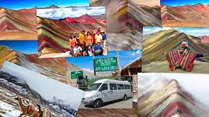
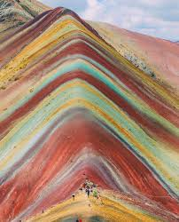
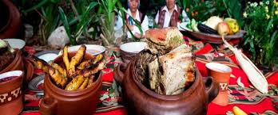
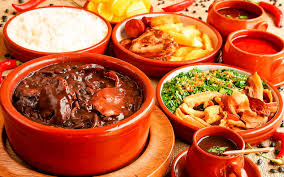
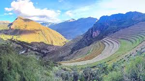
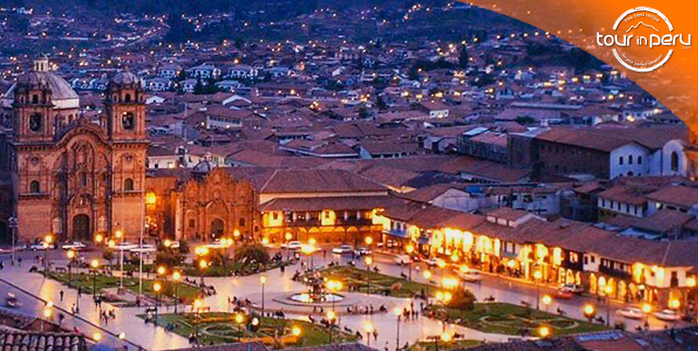

Duración: 1 día
Incluye:
- Transporte ida y vuelta desde Cusco
- Guía turístico bilingüe (Español/Inglés)
- Entrada al Parque de la Montaña de Colores
- Desayuno y almuerzo típico
|
Qué llevar:
- Ropa cómoda y abrigadora
- Protector solar, gorra o sombrero
- Botella de agua reutilizable
- Cámara o teléfono para fotos
|
PRECIO: 100 USD por persona
Itinerario
1. Recorrido hasta la Montaña de Colores
Duración: 3 horas
Horario: 4:00 AM - 7:00 AM
Actividades:
- Viaje en bus a la base de la montaña
- Breve descanso en la parada de camino
- Inicio de la caminata hacia la Montaña de Colores
- Sesión de fotos en la cima




2. Almuerzo típico en el restaurante local
Duración: 1 hora
Horario: 12:00 PM - 1:00 PM
Actividades:
- Almuerzo en un restaurante local en el Valle Rojo
- Degustación de platos típicos como el Cuy, la Trucha frita, y la Quinua
- Tiempo libre para disfrutar del paisaje
Restaurante: Valle Rojo
¡Sabores andinos en un ambiente único!
Calificación: 4 estrellas
Platos famosos de la carta
- Cuy al horno
- Trucha frita
- Caldo de gallina
- Guiso de alpaca
3. Regreso a Cusco
Duración: 3 horas
Horario: 3:00 PM - 6:00 PM
Actividades:
- Regreso en bus a Cusco
- Breve descanso en el camino
- Fin del tour en la Plaza de Armas de Cusco

